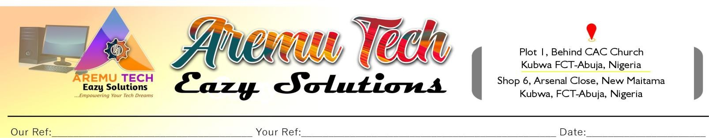
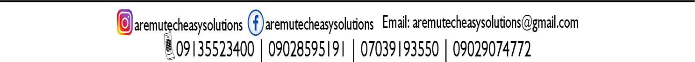

Dear Sir/Ma,
We write to formally introduce ExamBox, a Computer-Based Testing (CBT) platform that lets a school create and conduct its own examinations digitally. It covers continuous assessment, mid-term and terminal examinations, promotional examinations, entrance tests and other custom assessments. Teachers prepare papers from the school’s own question bank, set subjects and time limits, and manage every examination session from one central dashboard — while candidates sit the exam on a familiar CBT screen with subject navigation, a countdown timer and secure submission.
We believe Goshen High School is committed to academic excellence and to giving its students a more efficient, secure and measurable examination process. ExamBox supports this with question randomisation, automatic submission when time expires, live monitoring of every candidate, instant scoring with per-subject breakdowns, and professional PDF and exportable result reports carrying the school’s logo. It runs on a single school computer and supports up to 500 simultaneous candidates using the school’s existing Wi-Fi.
As an added benefit, the licence includes a curated library of over 60,000 JAMB/UTME past questions and practice materials (1985–2025) that students can use for exam preparation alongside the school’s own question bank.
Full features, system requirements and pricing details are on pages 2 to 4. We would be delighted to arrange a live demonstration at Goshen High School, at your convenience. Thank you for your consideration; we look forward to partnering with your esteemed school.

Most candidates sit the UTME having never touched a real CBT interface. Paper mocks do not replicate the pressure of an on-screen timer, digital navigation or the submit button. Café alternatives are expensive, hard to supervise and expose candidates to distractions. ExamBox solves these problems in one affordable, school-controlled solution.
| Item | Amount | What it covers |
|---|---|---|
| First-time implementation licence | ₦600,000 (one-off) | ExamBox CBT system, school question bank setup, optional 60,000+ JAMB/UTME practice materials, school branding, installation, custom examinations, results, monitoring and technical onboarding |
| Annual renewal | ₦400,000 per year | Keeps the system active; includes software updates and technical support |
Pay once to start, then renew yearly. There are no per-candidate or per-exam charges, and no internet data is required to run examinations — only the school’s local Wi-Fi/LAN.
Goshen High School can load its own questions into ExamBox and create complete school examinations. The optional JAMB/UTME practice library can be used alongside the school question bank, including:
A branded Goshen High School portal can be arranged as part of implementation. It gives administrators, teachers and candidates separate access, with tools to create exam sessions, upload questions, assign classes and subjects, set time limits, monitor candidates, publish results and keep student performance records.
Exam configuration, portal branding, user roles, result access and reporting will be agreed with the school during onboarding and tailored to its academic calendar.
The implementation price includes priority onboarding and complimentary setup assistance. Renewal is due annually at ₦400,000.
For inquiries or to schedule a live demonstration, contact Aremu Tech Eazy Solutions at aremutecheasysolutions@gmail.com | 09135523400 | 09028595191
Server computer (host) — one PC runs the entire exam
| Component | Minimum | Recommended |
|---|---|---|
| Operating System | Windows 10 (64-bit) | Windows 11 (64-bit) |
| Processor | Intel Core i3 | Intel Core i5 or higher |
| RAM | 4 GB | 8 GB or more |
| Storage | 2 GB free | SSD recommended |
| Installation | Single .exe — no separate .NET runtime or installer required | |
Candidates connect using any device with a modern web browser on the same network:
| Candidates | Recommended Server Specification |
|---|---|
| 1 – 100 | Core i3, 4 GB RAM |
| 101 – 300 | Core i5, 8 GB RAM |
| 301 – 500 | Core i7, 16 GB RAM |
ExamBox supports up to 500 simultaneous candidates on appropriately configured hardware, suiting both small tutorial centres and large secondary schools. It ships as a single self-contained executable — simply install and run.
Note: Available deployment options and custom question bank features depend on the selected licence.